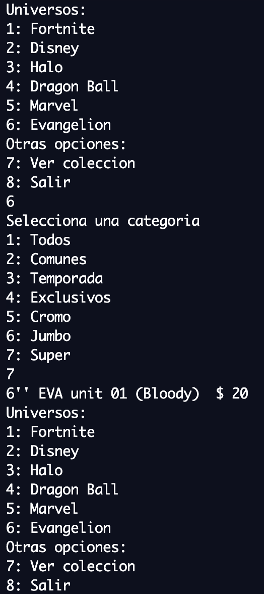

Pagina para Funko
Python
Se desarrollo un programa en Python para simular el
funcionamiento de un metodo de busqueda de productos por universo
y clase para la pagina web de Funko, incluyendo base de datos. El
programa despliega un menu que muestra los diferentes Universos
con los que cuenta y una vez seleccionado uno, despliega un menu
mostrando las clases de Funkos, la cual al seleccionarla muestra
los Funkos disponibles en las selecciones y su precio, ademas
cuenta con una funcion para mostrar los Funkos con los que
cuentas en tu coleccion.


Plataforma de streaming de video
C++
Para este proyecto se desarrollo un programa orientado a
objetos que simula una plataforma de streaming de video, en la cual
se despliega un menu que permite buscar videos por un genero o
rating especificos, episodios por series y rating especificos y
calificar videos, mostrando los resultados obtenidos incluyendo su
nombre, genero, duracion y rating.
Fan-out y Bootmasters
C++
Para este proyecto se creo un programa en C++ que recibe un
archivo con gran cantidad de informacion de inicios de sesion,
incluyendo la fecha, direccion IP source, direccion IP target y
mensaje de inicio de sesion. Este programa identifica y despliega
a las direcciones con mayor Fan-Out o posibles Bootmasters,
permitiendo identificar posibles ataques.